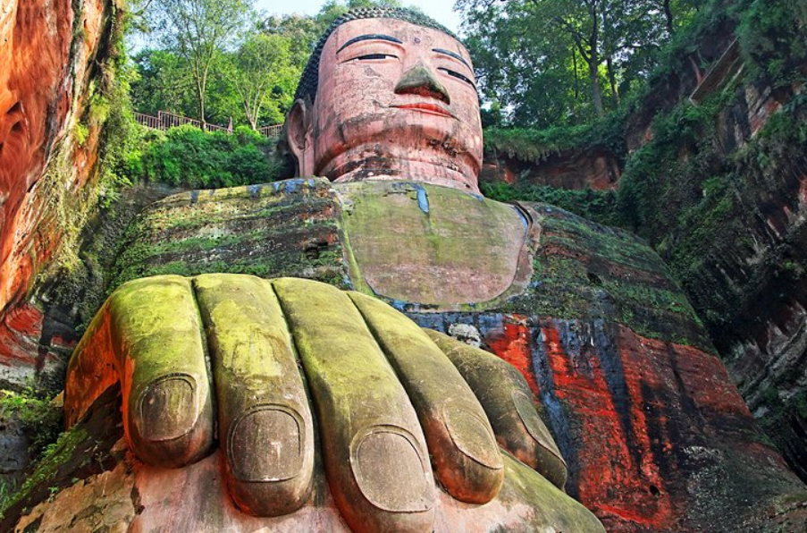
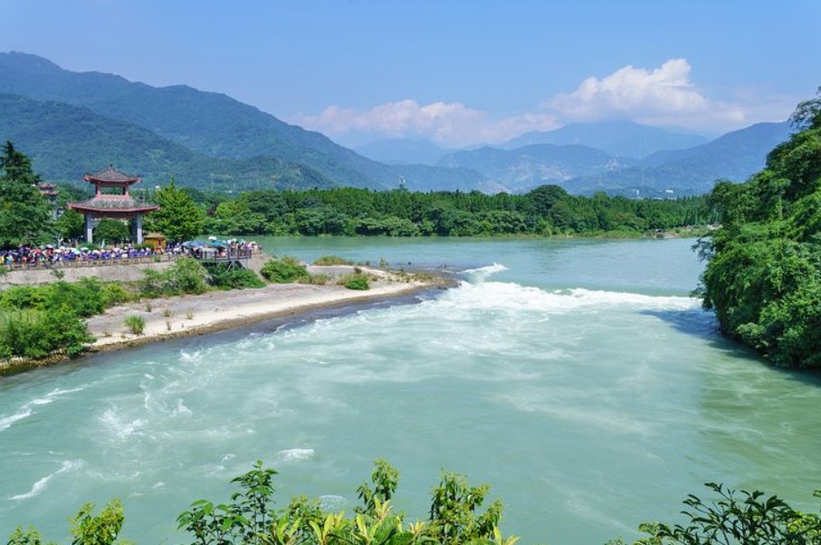
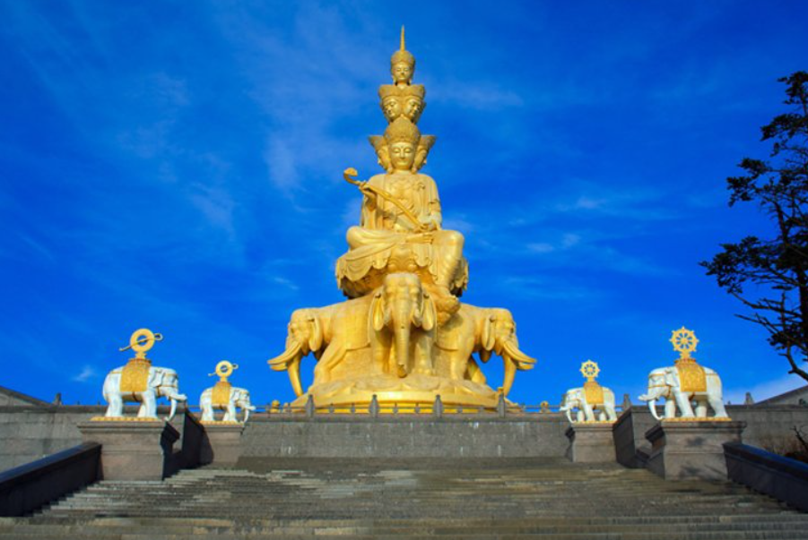

Feed the Pandas: The Chengdu Research Base of Giant Panda Breeding often shortened
to Chengdu Panda Base not only offers a chance to see these amazing creatures up close in their natural environment,
it also provides an in-depth look at one of the world's most-loved and laid-back animals.
Established in 1987, the facility began with just six rescued giant pandas, a number that has since grown to 83 animals
and seen some 124 panda births. Tours also include a chance to visit the on-site museum featuring exhibits dealing with
the reproductive problems of these fickle bears. Often found sleeping, pandas are their liveliest during morning feeding
times, so plan your trip accordingly.
A great way to get the most out of a visit is to join an organized tour, such as the Half-Day Chengdu Panda Breeding
Center Tour. If you can, be sure to select the upgraded baby panda holding option for an unforgettable, close-up
experience of these fascinating and cuddly creatures. Hotel pickup and transport is included.
For an even more memorable experience, consider taking the Panda Rescue Center Volunteer for a Day package.
This unique experience allows you to prepare food for these lovable creatures, as well as receive a private tour of the facility
(hotel pickup, transport, and lunch provided).
For a chance to see pandas in the wild, book a trip to the vast Wolong Nature Reserve, 130 kilometers west of Chengdu.
Covering an area of 2,000 square kilometers, this superb conservation area is surrounded by mountains and is home to 60 different types of mammals,
as well as 300 species of birds and 4,000 kinds of plants, including giant redwood trees. And, of course, pandas!
Address: 1375 Panda Road, Northern Suburb, Chengdu, Sichuan
Click the link below to go to the official website
Chengdu Research Base of Giant Panda Breeding
The Leshan Giant Buddha, a colossal stone statue of Maitreya, has been a UNESCO World Heritage Site since 1996.
Standing 71 meters high and carved directly from the surrounding rock, this amazing feat was started by a Buddhist monk by the name of Haitong
in AD 713. After his death, the work was continued by a number of other monks and artists until it was eventually completed in AD 803.
Today, the figure is the largest sculpture of Buddha to be found anywhere in the world and attracts pilgrims and tourists from far and wide.
It's also responsible for the famous saying, "The mountain is a Buddha and the Buddha is a mountain."
One of the best ways to enjoy a hassle-free trip is to book a private tour, such as the first-rate Day Trip to the Leshan Grand Buddha from Chengdu.
Highlights of this popular day trip include an English-speaking guide, who will lead you to a few different lookout points from which to
view the Buddha, including from an optional river cruise, if you so choose. You'll also enjoy a private tour of Lingyun and Wuyou Temples.
Included with your trip are lunch at a traditional Chinese restaurant, as well as pickup and drop-off from your hotel in Chengdu.
Address: 2345 Lingyun Road, Shizhong District, Leshan, Sichuan
Click the link below to go to the official website
Leshan Giant Buddha

Constructed in 250 BC, the fascinating Dujiangyan Irrigation System is located near the town of Guanxian on
the upper reaches of the Minjiang River. Although some 55 kilometers northwest of Chengdu, it's well worth visiting as
part of a day trip to this beautiful part of the country.
Constructed to prevent catastrophic flooding, this amazing system included a network of earth dams with sections branching out
into tributaries and canals to irrigate fields. The system comprises interestingly named components such as the Fish's Jaws,
which functions as a watershed and dike; the weir known as Flying Sands (Feisha Yan); and the canal, the Neck of the Precious
Bottle (Baoping Kou). As a result of this ingenious system, the Minjiang hasn't flooded for more than 2,200 years,
and the Chengdu Plain of central Sichuan has become one of China's most fertile regions.
A nearby attraction that's well worth visiting is the Cave of the Heavenly Master (Tianshi Dong), where Zhang Daoling,
the founder of the Taoist religion, taught in a cave in Mount Qingchengsahn. The temple dates from the Sui period of AD 589 to 618
and includes a terra-cotta likeness of Zhang Daoling and three statues dating from AD 723 representing Fuxi, Shengong, and Xianyuan,
three rulers said to have lived in China in prehistoric times.
A great way to enjoy the Mount Qingchengsahn area while at the same time taking in the must-see irrigation system, along with a number
of other nearby points of interest, is the fun Qingcheng Mountain and Dujiangyan Irrigation System Day Trip from Chengdu.
After departing your Chengdu hotel, you'll spend a full day exploring some of the most beautiful scenery in the Sichuan region's
Qingcheng Mountains, along with its many well-preserved temples.
The undisputed highlight, of course, is Dujiangyan. In addition to explaining the workings and significance of this marvelous feat of
engineering, your English-speaking guide will also introduce you to great traditional food over lunch.
Location: Dujiangyan City, Chengdu, Sichuan
Click the link below to go to the official website
Dujiangyan Irrigation System

Mount Emei (Emeishan), dedicated to the Bodhisattva Puxian, stands 160 kilometers southwest of Chengdu and is well worth a visit.
The mountain's highest peak, the Peak of the Ten Thousand Buddhas (Wanfo Ding), reaches a height of 3,099 meters and is revered by Chinese
Buddhists as one of the four Holy Mountains, the others being Mount Wutaishan in Shanxi province, Mount Jiuhuashan in Anhui province,
and Mount Putuoshan in Zhejiang province.
As shrouded in legends and myths as they are in clouds and mists, the first Taoist temples on Mount Emei were built during the Eastern Han dynasty from 25-220.
From the Tang period of AD 618-907 onwards, it became one of the major destinations of Buddhist pilgrims due to its more than 200 shrines. Some 20 temples and
monasteries still survive.
Click the link below to go to the official website
Mount Emei
